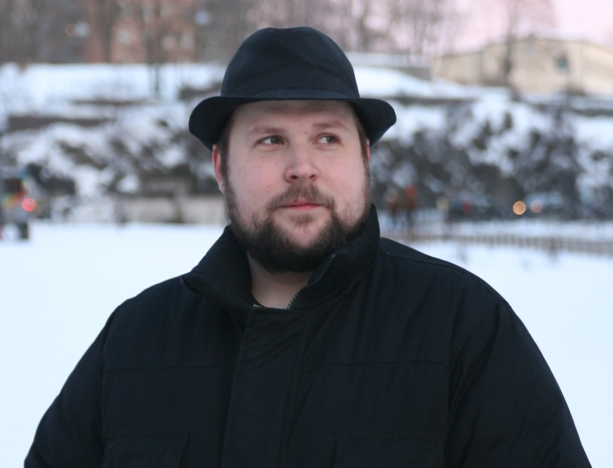

|  | "When I was really young I said I wanted to be a cop or something but I kinda knew I always wanted to make games. I said this to my career councillor and she said: Oh, well that's probably not going to happen." | "Amikor fiatal voltam azt mondtam, rendőr akartam lenni, vagy ilyesmi, de tudtam hogy mindig is akartam játékokat csinálni. Ezt megmondtam a karriertanácsadómnak és azt mondta: Ó, hát ez valószínűleg nem fog megtörténni." |
|---|---|---|
| Markus Persson, a Mojang alapitója |